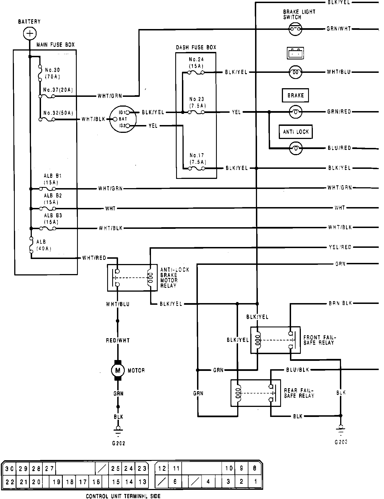
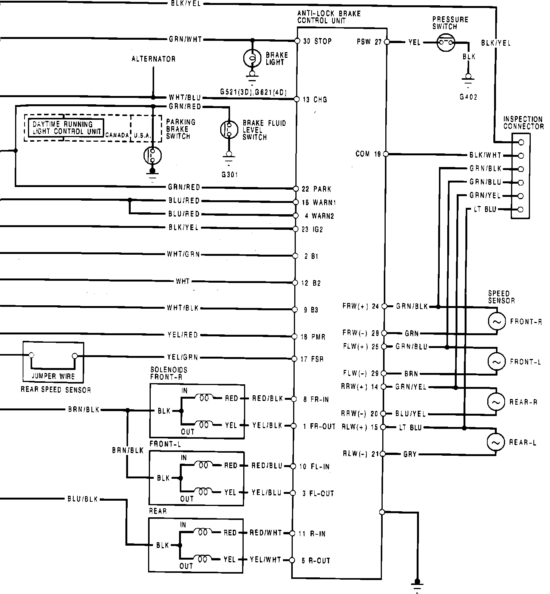
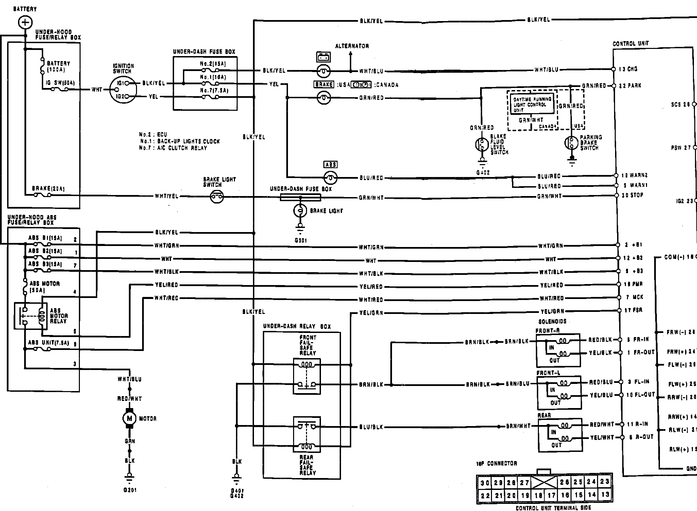

Operation CHARM
: Car repair manuals for everyone.
Home
>>
Acura
>>
1993
>>
Integra L4-1834cc 1.8L DOHC FI
>>
Repair and Diagnosis
>>
Brakes and Traction Control
>>
Antilock Brakes / Traction Control Systems
>>
Diagrams
>>
Electrical Diagrams
>>
Circuit Diagrams
Circuit Diagrams
Fig. 13 Wiring Circuit:

Fig. 13 Wiring Circuit:

4V%2Fig. 15 Wiring Circuit:
